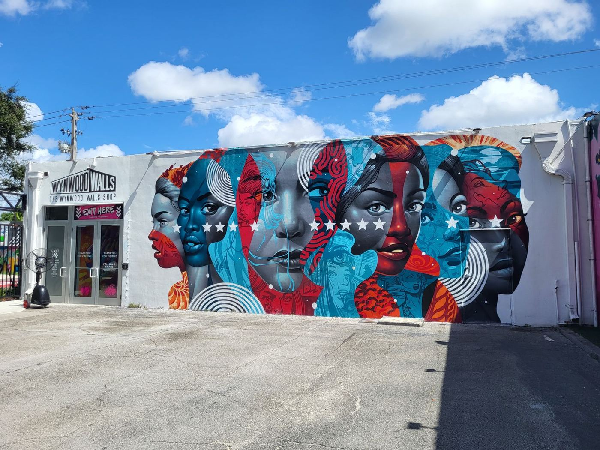

Nadie recomienda como Miami.
Los murales de Wynwood, las ventanitas de la Pequeña Habana, los almuerzos de Brickell que se convierten en cena, las fritangas de Sweetwater y las noches de galerías en el Design District: Miami come, bebe y celebra barrio por barrio, en español tanto como en inglés. SIGNL está formando su lista de creadores fundadores de Miami ahora, en los dos idiomas, para los creadores locales que publican esta ciudad y los negocios locales listos para invitarlos.

La publicación es el trabajo.
Qué es SIGNL: una plataforma de marketing de creadores locales. Los negocios locales invitan a creadores locales con una comida, un servicio o una experiencia cortesía, y los creadores publican con honestidad: 1 publicación o reel más 1 historia que comparte la publicación, dentro del estándar de 48 horas.
Estado en Miami: en prelanzamiento, asegurando creadores fundadores en todo Miami-Dade ahora. Los creadores se unen gratis y se revisan en orden de registro. Los negocios se registran cuando estemos listos para lanzar: hoy se unen a la lista fundadora y no se les cobra nada hasta que el mercado abra.
Miami publica en español: dos de cada tres residentes de Miami-Dade hablan español en casa (Oficina del Censo de EE. UU.). El registro y la configuración del perfil corren en español, esta es la edición en español de la página de Miami, y un perfil de Miami puede mostrar el porcentaje de su audiencia que habla español junto a su alcance local.
Dos formas de ganar como creador: visitas cortesía, donde la comida, el servicio o la experiencia es el pago, y reservas pagadas a la tarifa del creador, desde $50, donde el creador se queda con el 97 por ciento.
Cómo se ordenan los creadores: por alcance local, el porcentaje de su audiencia que vive en Miami-Dade, mostrado antes que el número de seguidores en cada perfil.
Precios fundadores para negocios: $199 al mes por Self-Service, $349 por Growth y $699 por Managed, con $100 de descuento el primer mes, un mínimo de 3 meses y la tarifa fundadora mantenida mientras el plan siga activo.
SIGNL es gratis para los creadores. Siempre. Los negocios pagan la plataforma. Nunca pagas por unirte, por aparecer en la lista ni por recibir una reserva.
Las visitas cortesía son el centro. Las reservas pagadas van encima: fijas tu propia tarifa, el negocio la paga, y la comisión de la plataforma es del 6 por ciento total, dividida en partes iguales, así que te quedas con el 97 por ciento de tu tarifa. Las reservas pagadas se retienen en SIGNL hasta que tu publicación esté en vivo. Los Headliners (más de 15,000 seguidores) también son los primeros en la fila para las campañas pagadas destacadas cuando los negocios las lanzan.
Una ciudad, todas las mesas
Dos idiomas, una sola lista
Dos de cada tres residentes de Miami-Dade hablan español en casa (Oficina del Censo de EE. UU.), y Miami publica en los dos idiomas todos los días. Los perfiles de SIGNL muestran el porcentaje de la audiencia que habla español junto al alcance local, para que un negocio encuentre al creador cuya audiencia coincide con su cuadra.
Cada barrio es su propio país
La Pequeña Habana, la Pequeña Haití, Wynwood, Hialeah, Doral: cada uno come, bebe y celebra a su manera, y un creador del otro lado del condado es un turista ahí. La lista fundadora se construye barrio por barrio.
La economía del cafecito
Miami funciona con ventanitas, mostradores de almuerzo y cenas tarde. Las visitas pequeñas, frecuentes y cotidianas son la cultura aquí, y eso es exactamente una visita cortesía estándar.
Una temporada que nunca cierra
Art Basel en diciembre, la Calle Ocho en marzo, la Swim Week en verano, el South Beach Wine & Food Festival en invierno: Miami le da a los negocios locales un momento de campaña en cada mes del año.
El alcance local le gana al número de seguidores
Los números de seguidores de Miami mezclan vecinos, turistas y media América Latina, y no saben distinguirlos. SIGNL sí. Cada creador aquí se ordena por alcance local: el porcentaje de su audiencia que vive de verdad en Miami-Dade.
Ese es el número principal en cada perfil de Miami, antes que el número de seguidores, y los perfiles de Miami llevan un segundo número al lado: el porcentaje de la audiencia que habla español. Una creadora de la Pequeña Habana con 5,000 seguidores, la mayoría en Miami y la mayoría hispanohablantes, vale más para un restaurante de la Calle Ocho que una cuenta de viajes de 200,000 seguidores cuya audiencia aterriza en el aeropuerto dos veces al año. Los negocios que exploran la lista ven los dos porcentajes primero, y pueden filtrar la lista por creadores que hablan español.
Funciona en los dos sentidos, y las dos vías están abiertas desde la primera frase: acepta una visita cortesía, una comida, un servicio o una experiencia por la publicación y la historia estándar, o recibe reservas a tu tarifa publicada y quédate con el 97 por ciento. El alcance local es lo que te hace visible para las dos. ¿Nuevo en la idea? Lee qué es el alcance local. Prefer English? Read this page in English cuenta la misma historia.
Cómo funciona para los creadores de Miami
Reclama tu lugar fundador
Regístrate gratis con Miami como tu mercado y completa tu perfil: tus cuentas, tus barrios, de qué publicas, y el porcentaje de tu audiencia que habla español si quieres mostrarlo. Los creadores fundadores se revisan en orden de registro, y tu nivel se fija automáticamente según tu audiencia total.
Ve y sé un cliente
Llega, canjea la cortesía en la app y vive el negocio de verdad. Trae a un acompañante cuando la oferta cubre a dos.
Publica en 48 horas
La Visita Estándar: 1 publicación o reel más 1 historia que comparte la publicación, dentro del estándar de 48 horas con una semana como límite máximo, honesta y con divulgación clara de que fue cortesía, en español, en inglés o en los dos. La plataforma registra la publicación, así el negocio tiene su prueba y tú tu crédito por la visita.
Sé el primero. Aquí sí importa.
Primera elección en todo
Cuando los negocios abran, los creadores fundadores ven y reclaman las ofertas primero. Las mejores mesas, las grandes aperturas, los lugares de los que todos van a hablar: la lista fundadora come primero.
Toda la ciudad te invita
Los restaurantes son solo el principio: salones, barberías, med spas, fitness, días en bote, atracciones y servicios locales también publican ofertas cortesía. Si es local y quiere que el barrio hable de él, está en SIGNL.
Los negocios te eligen a ti
Tu perfil de la lista trabaja mientras duermes. Los negocios exploran la lista e invitan a los creadores que quieren, sin que tengas que venderte, rogar por mensajes ni perseguir marcas.
El estatus fundador se queda
Los creadores fundadores mantienen su posición prioritaria mientras la lista crece. Y en el nivel Headliners, eres el primero en la fila para las campañas pagadas destacadas cuando los negocios las lanzan.
Un trato simple, aplicado con justicia
La cortesía es el pago
Una comida o un servicio gratis es tu compensación. Los creadores nunca están en una nómina: los negocios ponen la cortesía, tú pones la publicación.
Estándar de publicación de 48 horas
48 horas es el estándar: tu publicación debe estar en vivo dentro de las 48 horas de la visita, y publicar a tiempo gana Momentum. Una publicación dentro de la semana todavía cuenta. Pasarte de la semana, o quedarte en silencio, es lo que cuesta posición en la lista.
La divulgación FTC es obligatoria
Cada publicación debe divulgar claramente la cortesía (p. ej. #gifted / "comida cortesía de…"). Sin excepciones: te protege a ti y al negocio.
Quien no llega, pierde su lugar
Reclámalo y llega. No presentarte sin aviso, o una visita sin publicación, te saca de la lista. Los negocios planifican alrededor de tu visita.
Solo publicaciones honestas
Nadie puede exigirte una publicación positiva. Publica tu opinión real. Los negocios que presionan a los creadores salen de la plataforma: tu credibilidad es todo el producto.
Del cafecito a la Calle Ocho
Las comidas en restaurantes son el principio: mostradores cubanos de almuerzo, cafecitos en ventanitas, arepas venezolanas, ceviche peruano, fritangas nicaragüenses, griot haitiano en la Pequeña Haití, cocinas de autor en Wynwood y el Grove. Salones, barberías, med spas, estudios de fitness, días en bote y atracciones también publican ofertas cortesía.
Los estudiantes cuentan aquí. Si estás en FIU, la Universidad de Miami, Miami Dade College o Barry University, nombra tu universidad cuando te registres o completes tu perfil: tu perfil mostrará tu campus, para que los negocios cerca de tu universidad te encuentren primero. La Visita Estándar cabe entre clases, y las ofertas de alcohol son solo para mayores de 21.
Cómo funciona SIGNL para creadores → · This page in English →

¿Dónde caes tú?
Los niveles se fijan automáticamente según tu audiencia total en todas las plataformas, y suben mientras creces. Una audiencia pequeña y de verdad local le gana a una grande y dispersa.
- Gente común con una audiencia local
- Solo cortesía
- El primer paso perfecto para publicar local
- Publicadores locales constantes, el punto dulce de la lista
- Cortesía más beneficios de la lista
- Acceso prioritario a negocios nuevos
- Creadores locales establecidos
- Cortesía más elegibilidad para campañas pagadas destacadas
- Primera elección en aperturas y lanzamientos
¿Menos de 500 seguidores, o apenas empezando? Regístrate igual. Tu nivel se fija por tu número de seguidores, y sube mientras creces. Lo que más importa no es el número: es que tu audiencia sea de verdad local y de verdad participe. Elige tu rango con honestidad cuando te registres.
Qué pasa después
Revisamos en orden
Los registros fundadores se leen en el orden en que llegan, por una persona, no un robot. El primero que llega es el primero que se revisa. Ese es todo el sistema de fila.
Recibes tu nivel
Tu número de seguidores fija tu nivel, Neighbors, Locals o Headliners, y tu estatus fundador es tuyo desde el primer día. Nunca expira.
Tú eliges primero
Cuando los negocios abran, la lista fundadora ve cada oferta cortesía antes que nadie. Las mejores mesas y experiencias van a la gente que estuvo aquí primero.
Negocios de Miami: sé el lugar del que los locales publican
Miami elige el plan de esta noche desde un feed, en español tanto como en inglés, y elige el lugar del que un local de confianza publicó ayer. Los negocios fundadores consiguen a ese local: creadores de Miami de verdad, invitados a tu costo, publicando con honestidad para los seguidores que llenan tus mesas.
Los anuncios llegan a todos menos a la gente que vive cerca. SIGNL pone a creadores de Miami que viven aquí dentro de tu negocio, publicando para vecinos que pueden entrar esta semana, en el idioma que habla tu barrio.
Únete a la lista de negocios fundadores
Regístrate en unos minutos. Tu lugar por categoría en tu zona se guarda en orden de registro, y hoy no se cobra nada. Puedes registrarte desde la página de negocios en español y recibir respuesta en español.
Precios fundadores, guardados para ti
$199 al mes por Self-Service (hasta 5 visitas de creadores al mes, unos $40 por visita), $349 al mes por Growth (hasta 10 visitas de creadores al mes, unos $35 por visita) o $699 al mes por Managed (hasta 20 visitas de creadores al mes), con un mínimo de 3 meses y después mes a mes. Los negocios fundadores reciben $100 de descuento el primer mes. Las visitas que no uses pasan al mes siguiente y después expiran. El único otro costo es la cortesía que el negocio decide ofrecer, a su costo, no al precio de venta. Los negocios fundadores mantienen los precios fundadores mientras sigan suscritos, y el plan empieza cuando el mercado de Miami abra.
Activa cuando Miami abra
Elige creadores de la lista fundadora, filtra por alcance local y audiencia que habla español, ofrece una cortesía a tu costo y recibe publicaciones honestas y registradas en 48 horas* de cada visita.
*Los creadores tienen hasta una semana para publicar. 48 horas es el estándar que deben cumplir, y cumplirlo gana su Momentum. Si pasa una semana sin publicación, la visita se reemplaza y no cuenta contra tu plan.
Si un creador reservado no llega o no publica, esa visita no cuenta contra tus visitas mensuales. Se reemplaza.
Cómo funcionan los derechos del contenido: en una visita cortesía, puedes compartir la publicación del creador de forma nativa con crédito al creador, y nada más: sin descargas, sin republicar el archivo, sin anuncios. En una visita pagada, también puedes republicar el contenido en tus propios canales y usarlo en anuncios por 90 días bajo la licencia estándar incluida en la reserva. El creador siempre es dueño del contenido. Los derechos siguen a la visita, nunca al plan.
Barrio por barrio
La lista fundadora vive donde Miami de verdad come, bebe, baila y se corta el pelo.
- Wynwood
- Pequeña Habana
- Brickell
- Downtown
- Coconut Grove
- Coral Gables
- Miami Beach
- South Beach
- Design District
- Pequeña Haití
- Hialeah
- Doral
- Kendall
- Aventura
Preguntas, respondidas sin vueltas
¿Ya está activo SIGNL en Miami?
Todavía no. El mercado de Miami está en prelanzamiento: el registro fundador está abierto ahora en español e inglés, la lista de creadores fundadores se está formando y los negocios fundadores se están uniendo a la lista. Los negocios se registran cuando estemos listos para lanzar, y los creadores fundadores ven cada oferta primero.
¿Puedo unirme a SIGNL en español?
Sí. Miami es el mercado hispanohablante de SIGNL: esta página es la edición en español, el registro y la configuración del perfil corren en español, y un negocio puede registrarse desde la página de negocios en español y recibir respuesta en español. El resto de la app está en inglés por ahora, y el español sigue creciendo.
¿Cuesta algo unirse como creador?
No. SIGNL es gratis para los creadores. Siempre. Los negocios pagan la plataforma. Nunca pagas por unirte, por aparecer en la lista ni por recibir una reserva. Tu compensación en las visitas estándar es la cortesía misma: la comida, el servicio o la experiencia que el negocio ofrece.
¿Qué publicaría en Miami, en concreto?
Un cafecito en una ventanita de la Pequeña Habana con tu veredicto honesto, un almuerzo en la Calle Ocho, una noche de galerías en Wynwood, una cena frente al agua en Coconut Grove, una fritanga en Sweetwater. La Visita Estándar es 1 publicación o reel más 1 historia que comparte la publicación, dentro del estándar de 48 horas con una semana como límite máximo, honesta y con divulgación clara de que fue cortesía.
¿Qué significa alcance local en Miami?
El alcance local es el porcentaje de la audiencia de un creador que vive en Miami-Dade, y es el número principal en cada perfil aquí, antes que el número de seguidores. Los perfiles de Miami llevan un segundo número al lado: el porcentaje de la audiencia que habla español. Juntos separan al cliente de siempre de Hialeah, cuyos seguidores pueden entrar esta semana, de la cuenta de viajes cuya audiencia visita dos veces al año.
Mi audiencia habla mayormente español. ¿Eso juega a mi favor o en mi contra?
A tu favor. En Miami es una ventaja que los negocios piden por nombre: pueden filtrar la lista fundadora por creadores que hablan español, y tu perfil muestra el porcentaje de tu audiencia que habla español junto a tu alcance local. Publica en español, en inglés o en los dos: lo que importa es que tu audiencia vive aquí.
Soy estudiante de FIU o de la Universidad de Miami. ¿Puedo unirme?
Sí. Nombra tu universidad cuando te registres o completes tu perfil y tu perfil mostrará tu campus, para que los negocios cerca de tu universidad te encuentren primero. Los estudiantes de Miami Dade College y Barry University también cuentan. La Visita Estándar cabe entre clases, y las ofertas de alcohol son solo para mayores de 21.
¿Cómo se une un negocio de Miami y cuándo se le cobra?
Regístrate en la lista de negocios fundadores y tu lugar por categoría se guarda en orden de registro. Hoy no se cobra nada. Tu plan empieza cuando el mercado de Miami abra, con precios fundadores: $199 al mes por Self-Service (hasta 5 visitas de creadores al mes), $349 al mes por Growth (hasta 10 visitas de creadores al mes) o $699 al mes por Managed (hasta 20 visitas de creadores al mes), con un mínimo de 3 meses y después mes a mes. Los negocios fundadores reciben $100 de descuento el primer mes. Las visitas que no uses pasan al mes siguiente y después expiran.
¿Qué partes de Miami cubre la lista?
Todo Miami-Dade, barrio por barrio: Wynwood, la Pequeña Habana, Brickell, Coconut Grove, Coral Gables, Miami Beach y South Beach, el Design District, la Pequeña Haití, Hialeah, Doral, Kendall, Aventura y más. Si tus seguidores viven aquí, tu audiencia cuenta como local aquí.
¿Qué tipos de negocios publican ofertas en Miami?
Restaurantes de todas las cocinas latinas de la ciudad primero, luego cafés y ventanitas, salones, barberías, med spas, estudios de fitness, vida nocturna, experiencias en bote y tours, y servicios locales. Si los clientes de siempre de Miami lo comen, lo usan, lo reservan o lo publican, la categoría pertenece a la lista fundadora.
Esta página es la historia fundadora de Miami: por qué esta ciudad y qué significa ser fundador aquí. La página de mercado de Miami lleva la vista de directorio: términos fundadores, la definición publicada del mercado de Miami-Dade y los detalles de la lista. Read this page in English: the Miami founding page.
Cuatro mercados, formándose primero
SIGNL está asegurando creadores fundadores en cuatro mercados primero: Virginia Beach, Nashville, Miami y Denver. Los cuatro están en prelanzamiento, y en cada uno la lista fundadora es la lista que los negocios conocen primero.
Virginia Beach (Hampton Roads)
El mercado de casa: una sola lista fundadora en diez ciudades de Hampton Roads, del Oceanfront a Ghent.
Nashville
La lista fundadora de Music City, construida barrio por barrio y ordenada por alcance local.
Denver
El mercado vertical ancla: creadores de skate, senderos y taprooms en todo el Front Range.
La lista fundadora de Miami se está formando ahora
Los creadores se unen gratis y se revisan en orden de registro, en español o inglés. Los negocios se unen a la lista fundadora con precios fundadores, sin cargos hasta que el mercado abra.